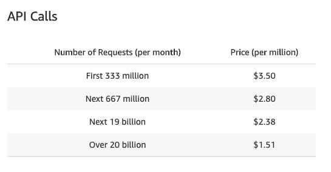

Serverless: 15% slower and 8x more expensive
Posted: Last updated:
Recently I wanted to try changing the API we have at CardGames.io and try using the Serverless framework. Serverless has been a hot topic in the tech world for the last few years and I was procrastinating wanted to keep my tech skills up to date by trying something new, so I decided to spend a few hours learning about serverless and see if hosting our API that way made sense.
Current setup
CardGames.io is hosted on AWS. We use S3 to store html pages, css, javascript and images. We have an API written in C# which is hosted on Elastic Beanstalk, using Linux servers running .NET Core with Docker. Finally we have a CloudFront CDN running in front of both the static files on S3 and the API. Below is our EC2 bill for August 2019. We have a few other instances, but for the API we use the m1.small instances (yes we should probably be using t2.small) and classic load balancing. When you sum up the parts in red it's 164.21$ for the month, not bad. I even included the whole EBS part in that, mostly because I'm not sure which part of it belongs to other stuff we run, we have a couple of other EC2 things running as well.
We have two environments with 1-3 instances in each, one is active and the other inactive. We have two because deploying .NET Core in Docker on AWS takes minutes so we deploy to the inactive environment and then switch CNAME records to switch over to the newly deployed one. The slowness in deploying was one of the reasons I wanted to try something new. We have some other servers running node.js apps on Beanstalk and those deploy in seconds, I wanted that for our API as well.
Going Serverless
I went through a very nice tutorial on hosting ASP.NET Web APIs using the Serverless framework, and found that I only had to add a simple config file, add one dependency and one small startup class to my existing API project. I then deployed it, which took maybe 20 seconds or so, a lot better than deploying to Beanstalk. I guess it's because Lambda has built in support for .NET Core (only 2.2 though), whereas in Beanstalk it's only supported if you use Docker and manage it yourself. In any case, so far I was happy, no thinking about autoscaling groups, max instances or any of that stuff.
Testing performance
Serverless on AWS is Lambda, which is what actually hosts your functions, and API Gateway, which is a front that lets you add stuff like rate-limiting, API keys and a lot more. I set our Lambda functions up in the us-west-2 region, the same one where our Beanstalk servers are hosted. I then set our CloudFront instance up to route requests for one of our games to our new serverless setup, and for another game to our old Beanstalk setup. Then I ran a simple test on two urls, one serverless, one Beanstalk. Both urls were hitting the exact same code in our API, saving one event to the database. I ran 100 requests for each, the results were:
I consistently found that the serverless setup was 15% slower. (Also, if you think it's slow altogether, I am running this from Iceland, so there's some latency involved). This was disappointing, but it was still fast enough and I just figured that there was some overhead in running API Gateway in front of our API, it does provide a lot of things, even if we don't use them. So, disappointing but not a dealbreaker!
Pricing
To be honest I hadn't thought at all about the pricing beforehand. I just figured "Pay for what you use" sounded like it would be cheaper than paying for instances that are on 24/7. So I let the new serverless setup run for a couple of days and then started checking my bills. Whoops! The Lambda+API Gateway bill was already over a hundred dollars! I first started messing with the Lambda setup, giving the lambda functions less memory to decrease the bill, but when I really looked at what was happening it was obvious that it was API Gateway that was the main problem. This is the pricing for API Gateway:
Our API accepts around 10 million requests a day. That's ~35$ every day, just for API Gateway. On top of that Lambda was costing around ~10$ a day, although that could maybe be reduced by using less memory. Together that's around 45$ per day, or 1350$ per month, vs. ~164$ per month for Elastic Beanstalk. That's 8 times more expensive! I like new tech, and deploying quickly but I'm not gonna pay an extra ~1200$ month for it. Back to Beanstalk!
Conclusion
Well, first of all I should probably read AWS pricing pages and do some math before changing things! But of course then I would have had to do my real work wouldn't have learnt valuable tech skills! I'm sure there are cases where API Gateway and Lambda are better than Elastic Beanstalk. I guess our use case is just not one of them. Maybe if you're using API Keys, rate limiting and other stuff API Gateway provides then it makes sense to pay 3.50$ for a million requests. For us it would have been better if we could just put a normal load balancer in front of Lambda. As far as I know that's not possible, API Gateway is necessary for http access to Lambda.
But even if we were just paying for Lambda, at 10$ a day we would be paying 300$ a month instead of 164$. We have a lot of requests, but each request does very little, it's basically one database call per request. Maybe heavier requests that use more compute time would be better served with Lambda, where you pay per 100ms of compute time. Below is a report for one request, you can see we're using 3.50ms of compute time and being billed for 100ms, which seems like a big waste.
Finally, I'm not trying to bash API Gateway, Lambda or serverless in general here, just showing that for some workloads they are a lot more expensive than boring old EC2 and Elastic Beanstalk. So that's what we're sticking with 🙂. It's also very possible that there's a much better or more efficient way to set this up, I'm by no means an AWS expert, so if you see some glaring errors by all means point them out in the comments. And now, if want to spend a few minutes playing simple card games, try out CardGames.io or our new puzzle game, SpaceBugs.io.
UPDATE 26.9.2019: This post got over a 100.000 views in 3 days and was on the top of both Hacker News and reddit.com/r/programming . I've definitely learnt a few things. I should have used an Application Load Balancer instead of API Gateway in front of Lambda. I should upgrade my ancient m1.small instances to a newer instance type. And I was able to get my Beanstalk deploy time down to a reasonable 30~40 seconds by using the runtime .NET Core docker image instead of the SDK one. Serverless still isn't the right fit for my use case, but it was definitely an interesting experiment!